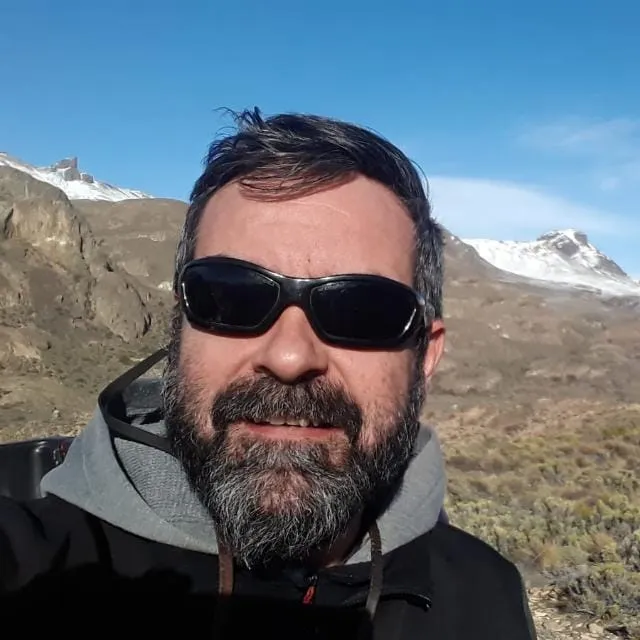

Licenciado en Ciencias Geológicas, egresado de la Universidad Nacional de San Juan, Argentina.
Gabriel posee más de 20 años de experiencia en prospección y exploración minera comenzando como asistente de campo, luego como geólogo junior y de proyecto hasta geólogo senior. Su carrera profesional ha estado fuertemente orientada a la geología de campo, utilizando como principales herramientas la cartografía geológica, el muestreo geoquímico, el desarrollo de campañas de geofísica y la planificación de campañas de perforación de exploración y definición de recursos. Así mismo, ha formado parte en equipos de evaluación y estimación de recursos y reservas minerales. Ha trabajado en distintos ambientes geológicos en variadas regiones de Argentina y Chile, prospectando y explorando por oro, plata, cobre y polimetálicos, en sistemas epitermales (HS y LS), sediment hosted y tipo Carlin, skarn y porfídicos; con especial participación en el descubrimiento y desarrollo del Proyecto Cerro Moro, actualmente una mina en producción.